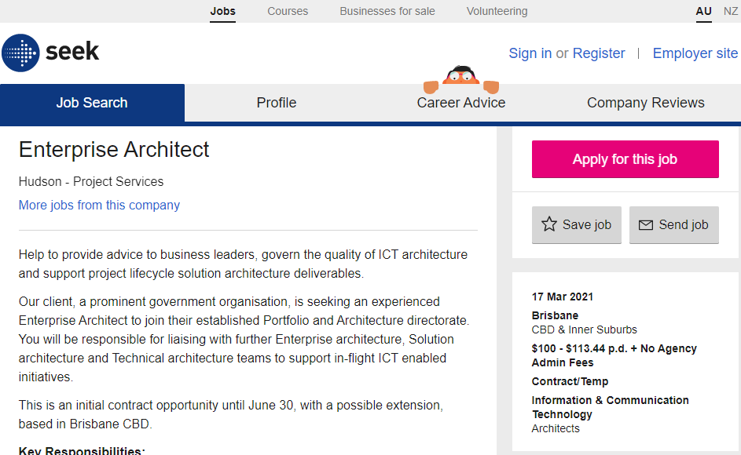

My name is Filip Filiposki, and I am identified as S3901186. My business email address is Filiposkiserver@gmail.com. I am half Serbian and half Macedonian, but since I grew up in Serbia and came to live in Australia when I was 13, I consider myself to be a Serbian more than a Macedonian. I speak three languages; Serbian, which I speak at home to my parents, Macedonian which I also understand and speak fluently to my grandparents and English which I speak to every other individual. To this day, I have only completed high school (year 12). One very interesting fact about me is that I played tennis in Melbourne Park, which is the best tennis academy in Victoria and one of the best in Australia. I have won 12 tournaments all together in Australia and Serbia, and all the trophies and medals that I have won I keep in my apartment, back home in Serbia.
|
|
My interest in IT has always been to be around computers and to help other people out with technical difficulties that they may be facing while using a computer or any sort of technology in general. I have always wanted to expand my knowledge with computers and to learn more about software development. My first interest in IT began when I was only 10 years old; I was gifted a desktop computer as a birthday present which I played video games on and slowly started to look deeper into the IT world. The first ever person to show me how to write a code was Mr. Docic, my primary school teacher back home in Serbia. I was 12 years old when I first started taking Information Technology classes back in Serbia, and when Mr. Docic taught me how to code a basic game in UNITY, my interest in IT sparked suddenly and ever since then I have been motivated to continue learning about video game development and computer systems.
The first ever time I was at RMIT was in year 11 with when I was on an excursion my old Information Technology class in 2019. When we were on the excursion, the staff and other university members who were telling us about their own experiences at RMIT and how the place has progressed over the years were very polite, so that kind of sparked my interest into coming to RMIT. The facilities were extremely tidy, and the map was easy to memorize, so I would be able to get around the place a lot quicker at RMIT than I would at any other place. Another reason why I chose to study at RMIT was also because RMIT is the ‘Royal Melbourne institute of Technology’ and getting a diploma in Information Technology in 3 years’ time meant that I was going to be looked at differently (in a positive way), rather than if I graduated at some other university, which would be the key to getting a successful job in the computer industry. RMIT just felt like home to me, unlike any other university I went to visit, and therefore I chose RMIT to be the university I study at.
During my studies at RMIT, I expect to be taught thoroughly about IT systems. I expect to be taught all the skills that are required for me to get a well-paid full-time job after the 3-year course that I am currently doing. I expect to be taught in depth on how to help people carry out their work and achieve their objectives and goals within an organization. Also, to be lectured the correct skills to have the chance of becoming the most productive and efficient in Information Technology graduate.
|  |
An Enterprise Architect’s main responsibility is the maintenance and the upkeep of an organization/company’s IT networks and services. As an Enterprise Architect, I would be responsible for the improvement of the technology of a company such as software (apps that companies use) and hardware (such as monitors, GPUs, CPUs). An Enterprise Architect is also responsible for the optimization of their business operations. The reason why I would want to take this position to become an Enterprise Architect is because I really enjoy being around a group of people / working in a team, building computer systems and developing software and working on projects, therefore realizing that this would be a suitable position for me.
To become an Enterprise Architect, you typically require an undergraduate degree in Information Technology / Computer Science, as well as 5-10 years of IT experience before being able to step into the role. Also, depending on the company you are trying to apply for, a master’s degree in Information Technology may be a requirement. A TOGAF (The Open Group Architecture Framework) certification is highly regarded when trying to apply for this position. Most companies are also looking for someone who has experience with SQL, modeling and graphic representations, enterprise data management, data sourcing, cloud computing and system architecture. For this role, an enterprise architect must have communication, analytical, teamwork, leadership, motivational and problem-solving skills. The position requires someone who can act as an expert in the development of business architecture framework, tool suite selection and be able to design a methodology development. Someone who can provide advice, direction and recommendations on all aspects of whole of government enterprise architecture will be automatically prioritized over other applicants for the same job position. As an Enterprise Architect, you are also required to suggest ideas to reduce costs in Information Technology for more future profit of the organizations.
Qualification wise, I have only completed Year 12 and I have started my Information Technology degree at RMIT this year. I have a lot of experience when it comes to computer systems, and I know how to build an AMD or Intel computer without any challenges. I would also be able to identify the correct technology a business needs in order to achieve goals and succeed in their industry, since I have been watching a lot of YouTube tutorials on how to succeed as a business owner. Skills wise, have great leadership and motivational skills since I used to work on group projects every chance I could and therefore develop these skills. My communicational and problem-solving skills are outstanding, and I will be able to lead a company to success in a few years-time.
Currently, I must graduate and complete my bachelor’s degree in information technology in order for my job application to be looked at even the lightest way in this industry. I am thinking about completing a master’s degree in Information Technology since it is more recognized than just a bachelor’s degree, and at this moment in time I might just finish bachelor’s degree and see how I go in the future. I would also require 5-10 years of experience in any other Information Technology job (my preferred ones are ‘Software Developer’ and Information ‘Technology Manager’), meaning that I would have to work in one of those fields before applying to become an Enterprise Architect since experience is key. Working in a TOGAF environment will also grant me extra points when applying for an Enterprise Architect position, so it is definitely also something I will consider doing in the future. And lastly, I will consider finding a part-time experience where I can be a helper /handyman of an Enterprise Architect and therefore develop extra experience when working in a team.


On the Myers-Briggs test, Commander identifies me to be someone who is extraverted, knows how to work in a team and be leader, and someone who is success-driven and always eager to improve. On the online learning style test, I was described as Auditory, meaning that l learn better by hearing and listening than reading and writing. I also understand instructions better if they are spoken, rather than if they were written. Lastly, the personality test I took has described me as an individual who is happy to help others around, someone who is caring and loving, and someone who does get stressed about things such as exams, but that I do not let that bother me most of the time. In conclusion, these tests results altogether describe me as someone who is willing to work on group projects and be a leader to drive the group to success, an individual who finds getting on well with people to be one of their priorities and someone who looks forward to hanging out with friends and partying. Therefore, this means that I would be a great leader.
According to these results, I would be the person who would feel happy to be working in a team. Although, the Commander does best describe me as the team leader, so if I did not get to be the team leader, I would most likely be demotivated and therefore that would affect my ability to make progress within the team. I would be one of the louder ones on the team and the ones who would get people distracted, but I would also be the best person to motivate another individual in my team if they are not having the greatest day of their life. I would be efficient in working on my own part of the project in a team since I am self-driven-to-success, and therefore I would get my work done quicker than other members, leaving me time to motivate them and give them some advice on what they should do to complete their work.
Since I am best described as a Commander of the team, I would be looking for someone who is an imaginative and a strategic thinker and has a plan for everything (Architect) because they would be able to come up with a backup plan which would be better than the original in case the original plan does not work out, someone who is spontaneous and energetic (Entertainer) because they would give the team energy and motivation to work harder than usual, and someone who is practical and fact-minded and who’s reliability cannot be doubted (Logistician), because they would be the quick-thinker of the group, therefore allowing us to spend less time discussing and more time doing the project/assignment. Taking into account the fact that I am Commander and finding my other three most needed elements would be the key to creating a mastermind which would be able to solve any problem/scenario and overcome any difficulties while working on a project.
The tennis videogame that will be produced in Unity will be a fun and competitive tennis videogame in which individuals will focus on chasing the tennis ball and trying to return it to the other side of the net. This game will include many modes; a wall mode, where the user will try to hit the ball every time it returns to them over a height line which will be drawn on the actual wall, an Offline Player Mode (Singles), where an individual will get to play a tennis match against a bot with different difficulties in a one-on-one match and an Offline Player mode (Doubles), where the player will get to play a tennis match with a bot on their side against the opposition which will also have two opponents to verse.
The reason why this tennis type video game would be important to the community is because it would motivate other users to pick up a tennis racquet and to start playing tennis, therefore making the society a more active community, since more than one-quarter (28%) of Australian adults reported moderate levels of physical activity, with over one-third (35%) reporting low levels. This project/video game would also be useful to teach children that playing sports is very important in today’s society and that you can become a professional athlete if you are persistent and motivated instead of going to university.
To start things off, this tennis type video game will include a Wall Mode. This particular mode will let the user hit the ball across the net onto a wall where a certain height margin will be marked on the wall where the player would have to hit the ball. If the player does not hit the ball over the specified margin, the wall will start to get wobbly and if the ball has hit the ball under the margin too many times, the wall will eventually collapse and a ‘GAME OVER’ screen will pop up. At the same time, while playing this mode, the score counter would be placed in the bottom left corner, and the higher score the player gets, the faster the ball gets, therefore increasing the chance of the player missing the ball and making it a fun challenge for the player. Secondly, this tennis type video game will include an Offline Player Mode (Singles). In this particular mode, the player would be versing a bot with their desired difficulty chosen on the loading screen after selecting the mode (Easy, Normal, Hard, Extreme or Hacker). Each difficulty has its own pros and cons, making it a fun and skilled based videogame. This tennis match would consist of two sets (Each set lasting four games, and one game lasting 4 points). The point counter would be kept in the top right corner of the screen. Additionally, there would be a 5%, 10% and 15% chance to hit a ‘fireball’ serve every time the serve is hit right in the middle of the racket against Easy, Medium and Hard bots, and a 25% and 35% chance of hitting a fireball serve against Extreme and Hacker mode, making a good serve to be one of the most important factors in the same, just as it is in real life tennis. Lastly, this tennis type video game will include an Offline Player Mode (Doubles). In this particular mode, the individual playing this game will have a choice of choosing the difficulty of their teammate (ps. it is better to choose a lower difficulty of the teammate in order to get better at the game), as well as the difficulty of the opposition (difficulties remain the same as in Singles Mode). This mode will implement the real-life tennis rules and therefore the side lines of the tennis court will not be used for play and if the ball is hit in the side lines, it will be considered OUT and the point will go to the opposition. Also, the point counter will be located in the top right corner and three sets will be played (Each set lasting 5 games, and one game lasting 4 points). This mode will also have the fireball serve added, and the % chance of you hitting the fireball serve will depend on if the ball is hit in the middle of the tennis racquet, but also the difficulty of your teammate and the opposition. The difficulties of the bots will remain the same as in Single Player Mode. (note, if your teammate is on easy mode and the opposition is hacker mode, you will have a 60% chance of hitting the fireball serve!).
The only software that will be needed to design this game will be Unity because I have had experience with it before and I know the basics to creating a game. The hardware I will be using will be my iPad to design the looks of the tennis racquets, tennis balls and the bots, and my PC (desktop computer) on which I will be making the actual tennis courts and designing and assigning difficulties for the bots, as well as testing out the game and making sure that everything is working in the correct order. I will also have a portable hard drive with me, where I will be keeping all the files in there in case the files on my PC get corrupted.
For this game to be created, I will have to learn the basics of programming languages C# and C++ and look up the tutorials on how to start off with unity. The creation of this game requires me to be very skilled with using a computer, meaning that I would have to know things such as where I saved my files, how to code the game, etc. Most of the skills that require programming will be dealt with appropriate manner, and YouTube tutorials will be watched to overcome the difficulties of designing things such as tennis courts, making sure that tennis racquet size and tennis ball size are accurate, etc.
If the project does become successful, the outcome will be pretty obvious as stated earlier; for the society to start interacting more with each other and for individuals to start picking up tennis racquets and planning tennis games and getting into a routine with their friends/acquaintances. By playing this tennis type videogame, individuals will learn that no matter how hard you try to be good at school / university, sport will always be an excellent option for everybody out there to succeed in and stay healthy. By the society understanding this concept, the world would have more future tennis athletes and tennis would become the most famous sport once again.